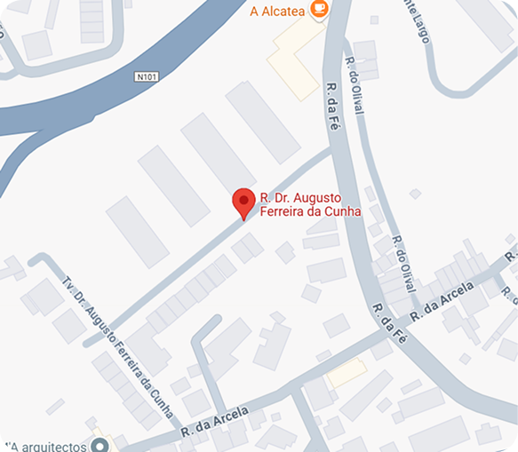

Detalhes da Ocorrência
Buraco na estrada
Localização
📍 Rua Dr. Augusto Ferreira , Guimarães 4800-039
Denunciante
📧 Rodrigo Sousa (rodrigomsousa1922@gmail.com)
Descrição
📝 Perto da passadeira, existe um buraco de grandes dimensões que representa um perigo para os condutores e peões. O buraco está localizado na faixa de rodagem, e tem aproximadamente 50 metros de diâmetro e 15 profundidade. A sua presença tem causado dificuldades no trânsito, especialmente para veículos de duas rodas, que têm de desviar-se para a faixa oposta, colocando em risco a segurança de todos.
Em Análise



Registos pelo denunciante
Buraco 1
Buraco 2